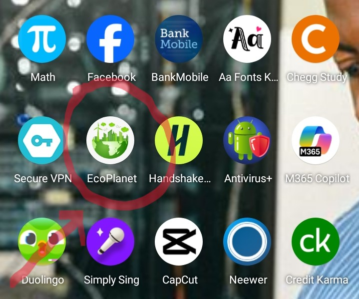
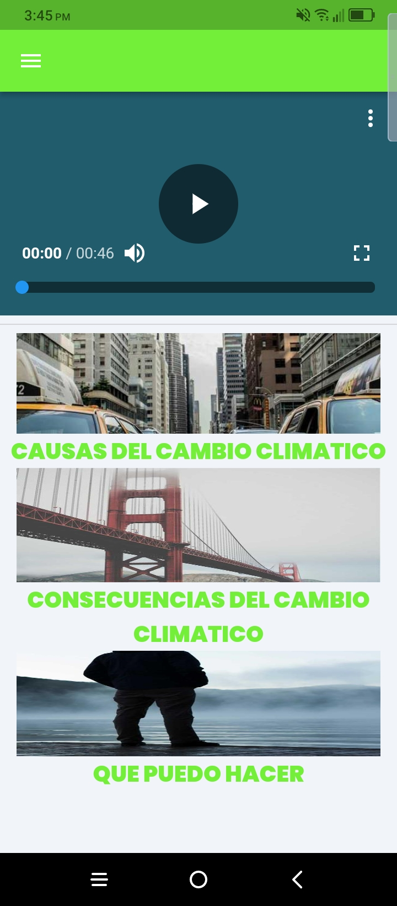
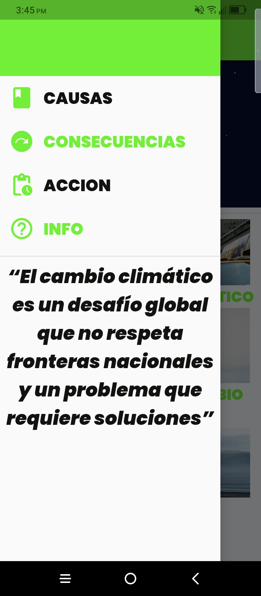
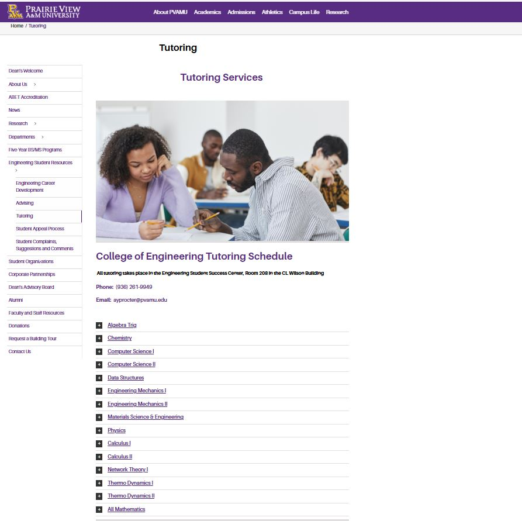
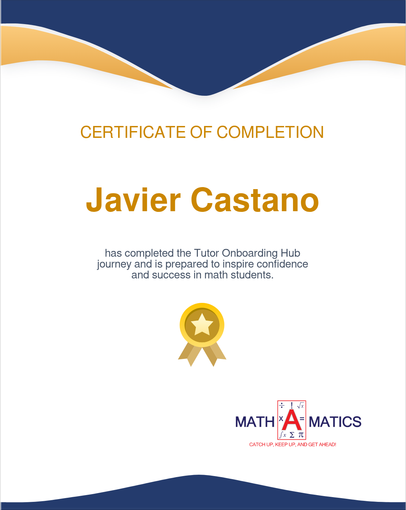
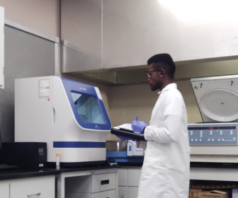
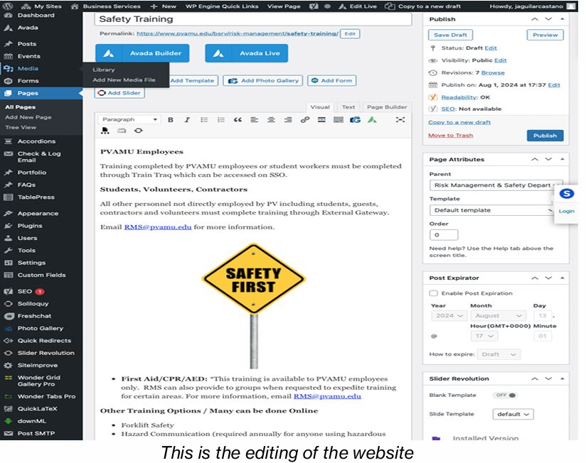
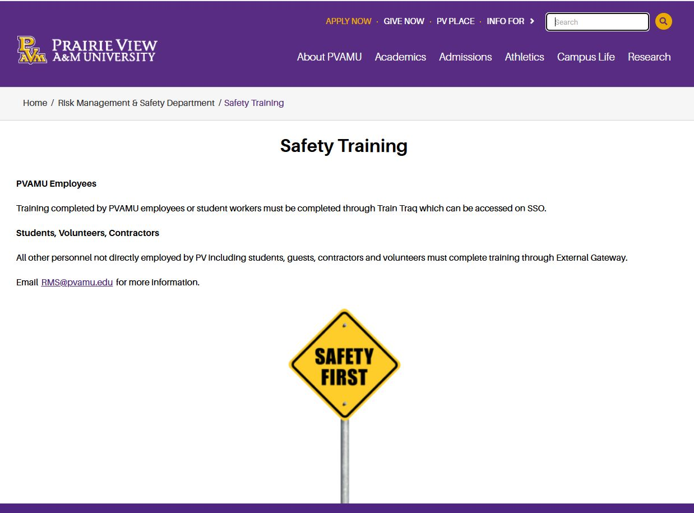
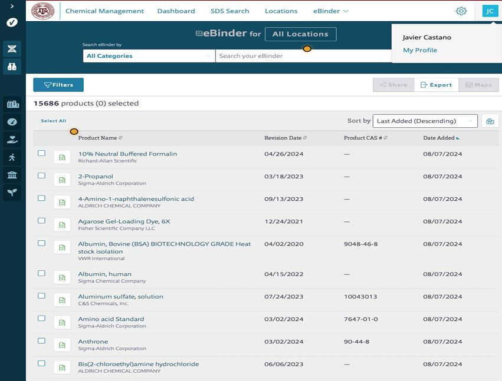

Internships, assistant roles, and tutoring experiences that shaped my technical and professional growth.
Software Development Intern — TechCamp (2019 & 2022)



Developed EcoPlanet, a cross-platform Flutter application raising climate awareness.
Built interactive UI, dynamic content feeds, and educational features promoting sustainability.
University STEM Tutor — PVAMU (2022–2023)


Provided tutoring in Math, Physics, C++, Python, MATLAB and assisted in Information Technology (IT).
Created hands-on examples and simplified complex concepts for student understanding.
PV-STEM Intern — PVAMU (2023–2024)

Managed lab data, supported research activities, and built internal full-stack tools
using WordPress, JavaScript, and automated workflows.
Assisted in risk management and lab safety operations.
Assistant Worker — PVAMU (2023–2025)



Developed and maintained internal full-stack applications and digital research tools.
Improved department workflows, created dynamic dashboards, and enhanced user experience.